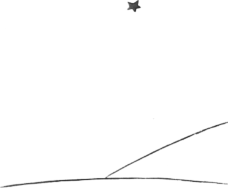

A tu jsem ¹»asten a v¹echny hvìzdy se ti¹e smìjí.
Potom si zase øíkám: Nìkdy je èlovìk roztr¾itý a hned se stane ne¹tìstí. Jednou veèer tøeba malý princ zapomnìl na sklenìný poklop nebo se beránek za noci ti¹e vykradl... A tu se mi v¹echny rolnièky mìní v slzy! ... V tom je velká záhada. Pro mne jako pro vás, kteøí máte malého prince rádi, nebude vesmír stejný, jestli¾e nìkde nìjaký beránek, kterého neznáme, spásl, nebo nespásl rù¾i...
Podívejte se na nebe. Ptejte se: Spásl nebo nespásl beránek kvìtinu? Uvidíte, jak se hned v¹echno zmìní...
A ¾ádný dospìlý nikdy nepochopí, ¾e je to tak dùle¾ité.
A tady je pro mne ta nejkrásnìj¹í a nejsmutnìj¹í krajina na svìtì. Je stejná jako krajina na pøedcházející stránce, ale nakreslil jsem vám ji je¹tì jednou, abych vám ji dobøe ukázal. Na tomto místì se malý princ na Zemi objevil a potom zmizel.
Zadívejte se pozornì na tuto krajinu, abyste ji bezpeènì poznali, budete-li jednoho dne cestovat v Africe na pou¹ti. A pùjdete-li náhodou tudy, sna¾nì vás prosím, nespìchejte, postùjte chvilku pøímo pod hvìzdou! A pøijde-li k vám pak dítì a bude se smát, bude mít zlaté vlásky a nebude odpovídat, kdy¾ se ho budete ptát, snadno uhodnete, kdo to je. Buïte tak hodní a nenechte mì tak smutného: rychle mi napi¹te, ¾e se vrátil...
